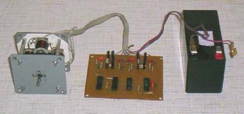
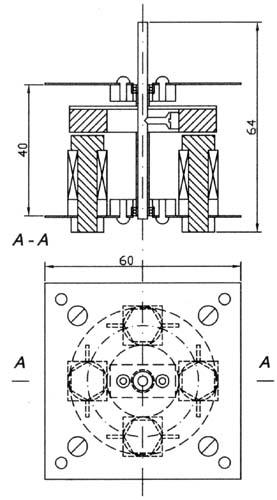
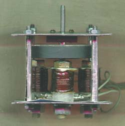
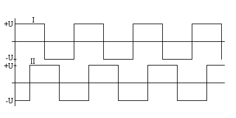
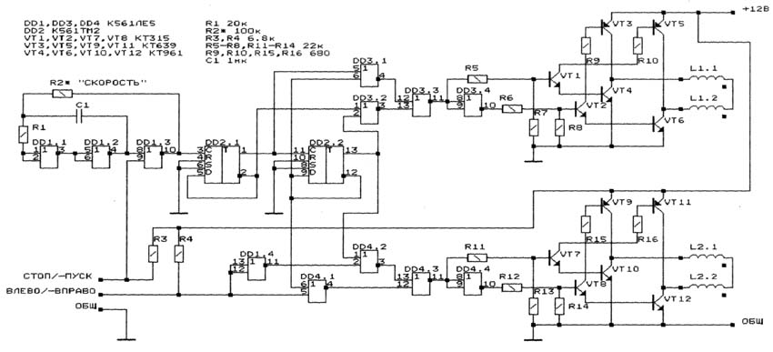
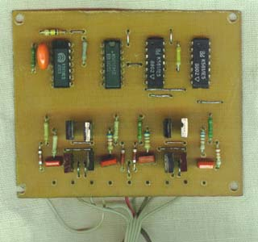

Шаговый двигатель на
кольцевом постоянном магните
(6 полюсов, 4 фазы, угол шага 30 градусов) с системой управления

Характеристики:
Конструкция двигателя
Чертежи шагового двигателя: файл St_Drv01.rar (~41 Кбайт), формат AutoCAD R14, упакован WinRAR 2.80.
Сборочный чертеж шагового двигателя (ШД) показан на рис. 1, а внешний вид - на рис. 2.

Рис. 1. Сборочный чертеж ШД.

Рис. 2. Шаговый двигатель (вид сбоку).
Статор двигателя состоит из основания и крышки, стянутых шпильками. По центру основания и крышки установлены шариковые подшипники, в которые вставляется вал ротора. Постоянный кольцевой магнит крепится на валу с помощью втулки. На основании расположены четыре катушки со стальными сердечниками. Двигатель может работать в четырех- или двухфазном режиме (при встречно-последовательном соединении противоположных катушек). Постоянный магнит намагничен в 6-полюсном намагничивающем устройстве [4]. Расчет катушек выполнен с помощью программы Coil [1].
Система управления
Для опробования ШД и измерения его характеристик была использована система управления (СУ) с генератором двухфазной последовательности импульсов (график изображен на. рис. 3) и входной логикой, позволяющей запускать или останавливать двигатель, а также изменять направление его вращения. Электрическая принципиальная схема СУ приведена на рис. 4, а внешний вид печатной платы - на рис. 5. При таком построении СУ ротор двигателя совершает поворот на один шаг за один цикл (имеется постоянное смещение в полшага).

Рис. 3. Двухфазная последовательность импульсов напряжения на обмотках двигателя.

Рис. 4. Схема электрическая принципиальная СУ ШД с генератором двухфазной последовательности импульсов.
На элементах DD1.1 - DD1.3 (К561ЛЕ5) собран генератор импульсов. Его частота, а, следовательно, и частота вращения ШД, определяется величиной сопротивления резистора R2 (чем больше сопротивление, тем меньше частота). Импульсы подаются на цепочку триггеров DD2.1, DD2.2 (К561ТМ2), работающих в режиме деления частоты на два. С помощью микросхем DD3, DD4 (К561ЛЕ5) формируется двухфазная последовательность со сдвигом на четверть периода и подается на инверторы VT1 - VT6, VT7 - VT12, с выхода которых напряжение поступает на соответствующие группы обмоток. Для запуска двигателя необходимо подать напряжение низкого уровня на вход СТОП/-ПУСК (при этом начинает работать генератор импульсов). Для изменения направления вращения подается или снимается сигнал низкого уровня на вход ВЛЕВО/-ВПРАВО (при этом изменяется фазовый сдвиг одного из сигналов двухфазной последовательности).

Рис. 5. Внешний вид печатной платы СУ ШД (размер платы 90 х 70 мм2).
СУ ШД может быть также построена с использованием PIC-контроллера [6].
Измерение скорости вращения осуществлялось следующим образом: датчик тесламетра [2] подносился как можно ближе к постоянному магниту шагового двигателя, выход тесламетра подключался к осциллографу, период сигнала соответствовал повороту магнита (и ротора) на 1200.
Шаговый двигатель имеет простую конструкцию и может использоваться в приложениях, не требующих большой скорости вращения и малых углов шага. Дополнительным свойством двигателя является фиксация ротора в отключенном состоянии за счет притяжения магнита к сердечникам катушек.
Ссылки:
15.11.2005
16.06.2010
Альтернативные источники
энергии
Компьютеры и
Интернет
Магнитные поля
Механотронные системы
Перспективные
разработки
Электроника и
технология